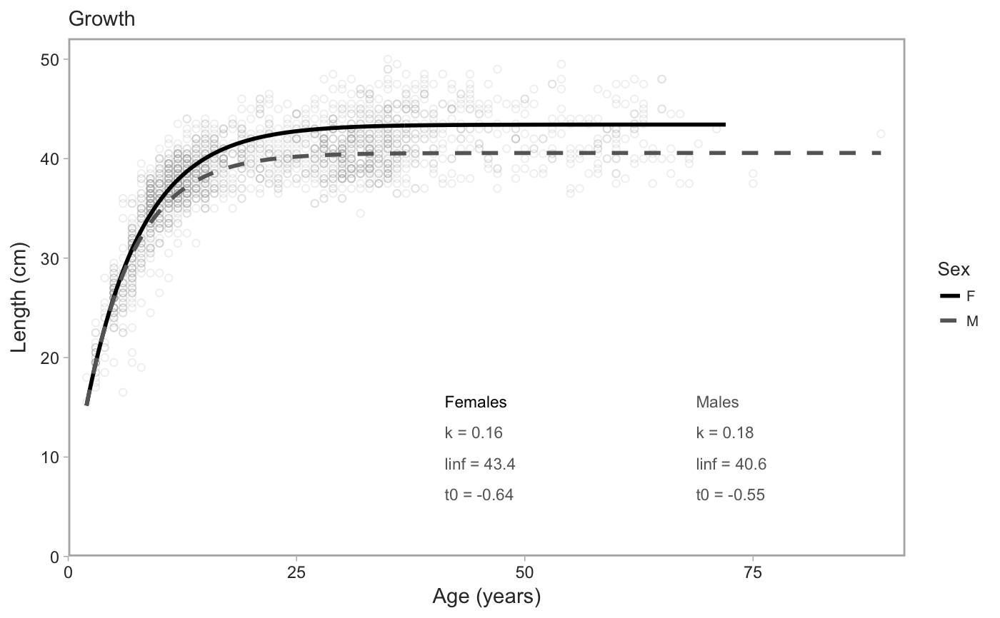
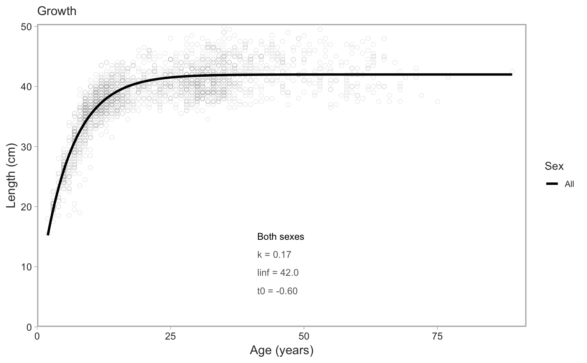

For use with data for a single species.
fit_vb(dat, sex = c("female", "male"), method = c("mpd", "mcmc"), downsample = Inf, chains = 4L, iter = 1000L, cores = parallel::detectCores(), allow_slow_mcmc = FALSE, est_method = median, min_samples = 50L, too_high_quantile = 1, uniform_priors = FALSE, ageing_method_codes = NULL, ...)
Arguments
| dat | Input data frame. Should be from |
|---|---|
| sex | Either "male" or "female". |
| method |
|
| downsample | If not |
| chains | Number of Stan chains. |
| iter | Number of Stan sampling iterations. |
| cores | Number of cores for Stan. |
| allow_slow_mcmc | Logical. If |
| est_method | If MCMC this defines how to summarize the posterior. Should
be a function such as |
| min_samples | The minimum number of fish before a model will be fit. |
| too_high_quantile | A quantile above which to discard weights and lengths. Can be useful for outliers. Defaults to including all data. |
| uniform_priors | Logical. If true then uniform priors will be used. |
| ageing_method_codes | A numeric vector of ageing method codes to filter
on. Defaults to |
| ... | Any other arguments to pass on to |
Details
Note that in some cases you must load the rstan package first and you may choose to do so just in case. If the rstan package is not loaded first, you may get the warning:
Error in cpp_object_initializer(.self, .refClassDef, ...) :
could not find function "cpp_object_initializer"
See also
Other growth functions: fit_length_weight,
plot_growth
Examples
library(rstan) # must load first # with `rstan::optimizing()` for the mode of the posterior density: model_f <- fit_vb(pop_samples, sex = "female")#> Initial log joint probability = 2276.95 #> Optimization terminated normally: #> Convergence detected: relative gradient magnitude is below tolerancemodel_m <- fit_vb(pop_samples, sex = "male")#> Initial log joint probability = 3009.6 #> Optimization terminated normally: #> Convergence detected: relative gradient magnitude is below tolerancemodel_f$model#> $par #> k linf sigma t0 #> 0.16292348 43.42801222 0.07106321 -0.63766600 #> #> $value #> [1] 3096.104 #> #> $return_code #> [1] 0 #>model_f$predictions#> # A tibble: 200 x 2 #> age length #> <dbl> <dbl> #> 1 2 15.2 #> 2 2.35 16.7 #> 3 2.70 18.2 #> 4 3.06 19.6 #> 5 3.41 21.0 #> 6 3.76 22.2 #> 7 4.11 23.4 #> 8 4.46 24.5 #> 9 4.81 25.6 #> 10 5.17 26.6 #> # ... with 190 more rows# with MCMC via Stan (slower): x <- fit_vb(pop_samples, method = "mcmc", chains = 1, iter = 800) # just for a fast example#> #> SAMPLING FOR MODEL 'vb' NOW (CHAIN 1). #> #> Gradient evaluation took 0.000315 seconds #> 1000 transitions using 10 leapfrog steps per transition would take 3.15 seconds. #> Adjust your expectations accordingly! #> #> #> Iteration: 1 / 800 [ 0%] (Warmup) #> Iteration: 80 / 800 [ 10%] (Warmup) #> Iteration: 160 / 800 [ 20%] (Warmup) #> Iteration: 240 / 800 [ 30%] (Warmup) #> Iteration: 320 / 800 [ 40%] (Warmup) #> Iteration: 400 / 800 [ 50%] (Warmup) #> Iteration: 401 / 800 [ 50%] (Sampling) #> Iteration: 480 / 800 [ 60%] (Sampling) #> Iteration: 560 / 800 [ 70%] (Sampling) #> Iteration: 640 / 800 [ 80%] (Sampling) #> Iteration: 720 / 800 [ 90%] (Sampling) #> Iteration: 800 / 800 [100%] (Sampling) #> #> Elapsed Time: 0.893138 seconds (Warm-up) #> 0.697525 seconds (Sampling) #> 1.59066 seconds (Total) #>x$pars#> $k #> [1] 0.1624545 #> #> $linf #> [1] 43.44004 #> #> $sigma #> [1] 0.07106274 #> #> $t0 #> [1] -0.6539176 #> #> $lp__ #> [1] 3093.782 #>x$predictions#> # A tibble: 200 x 2 #> age length #> <dbl> <dbl> #> 1 2 15.2 #> 2 2.35 16.8 #> 3 2.70 18.3 #> 4 3.06 19.7 #> 5 3.41 21.0 #> 6 3.76 22.2 #> 7 4.11 23.4 #> 8 4.46 24.5 #> 9 4.81 25.6 #> 10 5.17 26.6 #> # ... with 190 more rowsx$data#> # A tibble: 1,444 x 34 #> trip_start_date year month gear survey_series_id survey_abbrev #> <dttm> <int> <int> <dbl> <dbl> <chr> #> 1 2011-07-05 00:00:00 2011 7 1 1 SYN QCS #> 2 2011-07-05 00:00:00 2011 7 1 1 SYN QCS #> 3 2011-07-05 00:00:00 2011 7 1 1 SYN QCS #> 4 2011-07-05 00:00:00 2011 7 1 1 SYN QCS #> 5 2011-07-05 00:00:00 2011 7 1 1 SYN QCS #> 6 2011-07-05 00:00:00 2011 7 1 1 SYN QCS #> 7 2011-07-05 00:00:00 2011 7 1 1 SYN QCS #> 8 2011-07-05 00:00:00 2011 7 1 1 SYN QCS #> 9 2011-07-05 00:00:00 2011 7 1 1 SYN QCS #> 10 2011-07-05 00:00:00 2011 7 1 1 SYN QCS #> # ... with 1,434 more rows, and 28 more variables: survey_series_desc <chr>, #> # survey_id <int>, major_stat_area_code <chr>, major_stat_area_name <chr>, #> # minor_stat_area_code <chr>, species_code <chr>, species_common_name <chr>, #> # species_science_name <chr>, specimen_id <dbl>, sample_id <dbl>, sex <dbl>, #> # age <dbl>, sampling_desc <chr>, ageing_method <dbl>, length <dbl>, #> # weight <int>, maturity_code <dbl>, maturity_name <chr>, #> # maturity_desc <chr>, maturity_convention_code <dbl>, #> # maturity_convention_desc <chr>, maturity_convention_maxvalue <dbl>, #> # trip_sub_type_code <dbl>, sample_type_code <dbl>, #> # species_category_code <dbl>, sample_source_code <dbl>, #> # usability_code <dbl>, grouping_code <dbl>x$model#> Inference for Stan model: vb. #> 1 chains, each with iter=800; warmup=400; thin=1; #> post-warmup draws per chain=400, total post-warmup draws=400. #> #> mean se_mean sd 2.5% 25% 50% 75% 97.5% n_eff Rhat #> k 0.16 0.00 0.00 0.16 0.16 0.16 0.16 0.17 160 1 #> linf 43.43 0.01 0.13 43.19 43.34 43.44 43.52 43.67 240 1 #> sigma 0.07 0.00 0.00 0.07 0.07 0.07 0.07 0.07 321 1 #> t0 -0.65 0.01 0.10 -0.83 -0.72 -0.65 -0.57 -0.46 174 1 #> lp__ 3093.47 0.09 1.32 3089.88 3092.77 3093.78 3094.40 3095.11 198 1 #> #> Samples were drawn using NUTS(diag_e) at Thu May 10 11:24:41 2018. #> For each parameter, n_eff is a crude measure of effective sample size, #> and Rhat is the potential scale reduction factor on split chains (at #> convergence, Rhat=1).# If less than `min_samples`, fit_vb() returns an empty object that # plot_vb() will correctly parse and produce an empty plot: obj <- fit_vb(pop_samples[1:2,]) plot_vb(obj, obj)